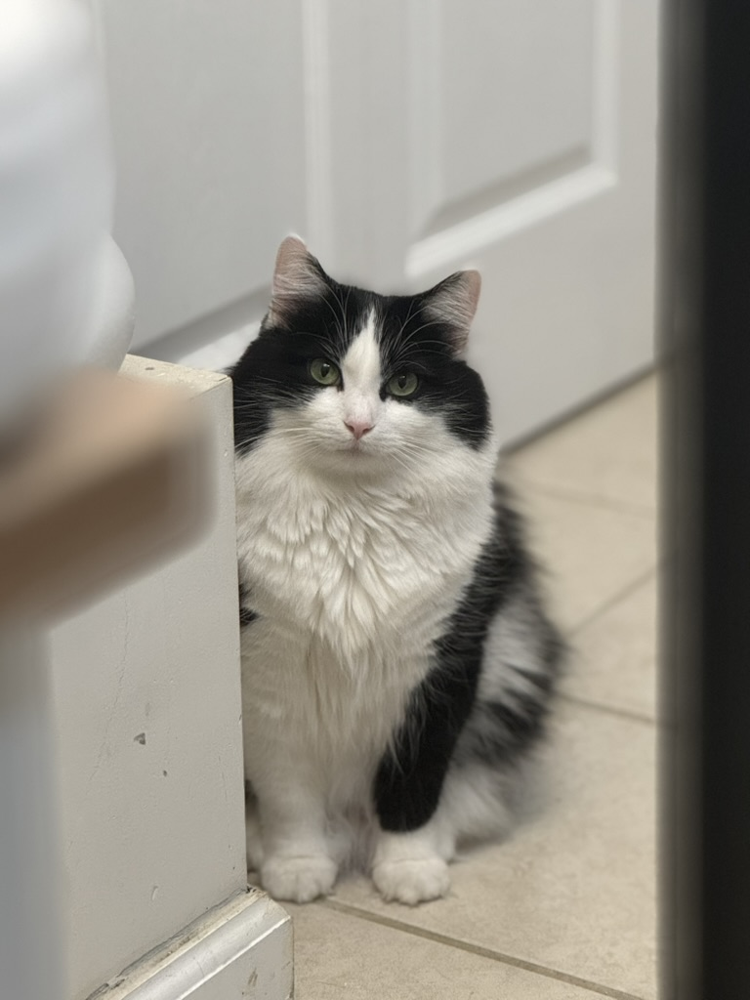

Hello, World 👋
My name is Kaoru. I'm a master's student in Human-Centered Computing and working as a Graduate Research Assistant at the University of Maryland, Baltimore County (UMBC), and it's lovely to meet you.
Check out my work below.
I am applying for HCI Ph.D. programs for Fall 2026.